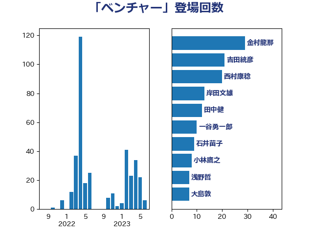

単語「ベンチャー」

| 金村龍那 | 日本維新の会 | 29 回 |
| 吉田統彦 | 立憲民主党 | 21 回 |
| 西村康稔 | 自由民主党 | 20 回 |
| 岸田文雄 | 自由民主党 | 13 回 |
| 田中健 | 国民民主党 | 12 回 |
| 一谷勇一郎 | 日本維新の会 | 10 回 |
| 石井苗子 | 日本維新の会 | 9 回 |
| 小林鷹之 | 自由民主党 | 8 回 |
| 浅野哲 | 国民民主党 | 7 回 |
| 大島敦 | 立憲民主党 | 7 回 |
| 藤巻健太 | 日本維新の会 | 5 回 |
| 斎藤アレックス | 国民民主党 | 5 回 |
| 後藤茂之 | 自由民主党 | 5 回 |
| 山口晋 | 自由民主党 | 5 回 |
| 水野素子 | 立憲民主党 | 4 回 |
| 古川元久 | 国民民主党 | 4 回 |
| 加藤勝信 | 自由民主党 | 4 回 |
| 中谷真一 | 自由民主党 | 4 回 |
| 長谷川淳二 | 自由民主党 | 3 回 |
| 赤木正幸 | 日本維新の会 | 3 回 |
| 神谷裕 | 立憲民主党 | 3 回 |
| 横山信一 | 公明党 | 3 回 |
| 島村大 | 自由民主党 | 3 回 |
| 大西健介 | 立憲民主党 | 3 回 |
| 務台俊介 | 自由民主党 | 3 回 |
| 仁木博文 | 無所属 | 3 回 |
| 長友慎治 | 国民民主党 | 2 回 |
| 鈴木英敬 | 自由民主党 | 2 回 |
| 角田秀穂 | 公明党 | 2 回 |
| 米山隆一 | 立憲民主党 | 2 回 |
| 福重隆浩 | 公明党 | 2 回 |
| 渡辺博道 | 自由民主党 | 2 回 |
| 浅田均 | 日本維新の会 | 2 回 |
| 末松信介 | 自由民主党 | 2 回 |
| 岩田和親 | 自由民主党 | 2 回 |
| 尾身朝子 | 自由民主党 | 2 回 |
| 佐藤英道 | 公明党 | 2 回 |
| 住吉寛紀 | 日本維新の会 | 2 回 |
| 高市早苗 | 自由民主党 | 1 回 |
| 鈴木義弘 | 国民民主党 | 1 回 |
| 萩生田光一 | 自由民主党 | 1 回 |
| 荒井優 | 立憲民主党 | 1 回 |
| 茂木敏充 | 自由民主党 | 1 回 |
| 細田健一 | 自由民主党 | 1 回 |
| 竹谷とし子 | 公明党 | 1 回 |
| 神谷政幸 | 自由民主党 | 1 回 |
| 田村智子 | 日本共産党 | 1 回 |
| 甘利明 | 自由民主党 | 1 回 |
| 猪瀬直樹 | 日本維新の会 | 1 回 |
| 清水貴之 | 日本維新の会 | 1 回 |
| 浮島智子 | 公明党 | 1 回 |
| 浅尾慶一郎 | 自由民主党 | 1 回 |
| 河野太郎 | 自由民主党 | 1 回 |
| 沢田良 | 日本維新の会 | 1 回 |
| 比嘉奈津美 | 自由民主党 | 1 回 |
| 根本幸典 | 自由民主党 | 1 回 |
| 柴田巧 | 日本維新の会 | 1 回 |
| 柚木道義 | 立憲民主党 | 1 回 |
| 杉尾秀哉 | 立憲民主党 | 1 回 |
| 斉藤鉄夫 | 公明党 | 1 回 |
| 広瀬めぐみ | 自由民主党 | 1 回 |
| 市村浩一郎 | 日本維新の会 | 1 回 |
| 山本香苗 | 公明党 | 1 回 |
| 小森卓郎 | 自由民主党 | 1 回 |
| 小倉將信 | 自由民主党 | 1 回 |
| 宮口治子 | 立憲民主党 | 1 回 |
| 太田房江 | 自由民主党 | 1 回 |
| 大野敬太郎 | 自由民主党 | 1 回 |
| 大島九州男 | れいわ新選組 | 1 回 |
| 堂込麻紀子 | 無所属 | 1 回 |
| 吉田久美子 | 公明党 | 1 回 |
| 吉川ゆうみ | 自由民主党 | 1 回 |
| 今枝宗一郎 | 自由民主党 | 1 回 |
| 井坂信彦 | 立憲民主党 | 1 回 |
| 中谷一馬 | 立憲民主党 | 1 回 |
| 上野賢一郎 | 自由民主党 | 1 回 |
| 三谷英弘 | 自由民主党 | 1 回 |
| 三木圭恵 | 日本維新の会 | 1 回 |